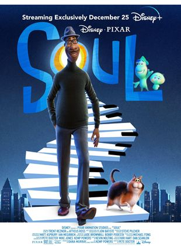

|  | Soul (2020)Joe é um professor de música que sonha em ser músico de jazz. Quando finalmente consegue uma vaga, sofre um acidente. Ele é transportado para um centro de almas, onde faz uma série de reflexões. Duração: 1h 47m - Infantil/Comédia Pontuação na plataforma: 4,0 estrelas Assistir ao trailer Assistir ao filme |
 |
A família Mitchell e a revolta das máquinas (2021)Existe a família perfeita? Esse é um dos questionamentos de Katie, uma jovem que está fazendo uma viagem à faculdade com sua família. No meio do caminho as máquinas se revoltam contra os humanos e os Mitchell são os únicos que podem salvar a humanidade. Duração: 1h 54m - Comédia/Ficção Científica Pontuação na plataforma: 4,4 estrelas Assistir ao trailer Assistir ao filme |